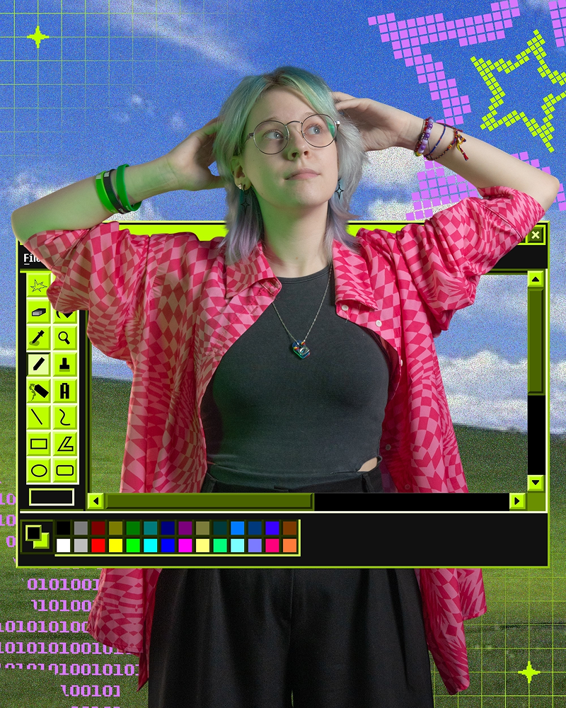

Калиничева Станислава
Студентка РГУ им. А.Н. Косыгина, направление "информационные технологии и дизайн".
Опыт работы: 9 месяцев

Достижения
- Член информационного штаба Студенческого совета Института информационных технологий более полугода
- Член информационного сектора Студенческого совета РГУ им. А.Н. Косыгина
- Член команды по связям с общественностью Федерации Спидкубинга на протяжении 3 месяцев
- Медиа-сопровождение двух проектов в РГУ им. А.Н. Косыгина
Навыки
- Дизайн в программах Figma, Adobe Illustrator
- Копирайт
- Фотография
- Видеосъёмка и монтаж
- Ведение социальных сетей
- Лидерство
- Креатив
- Программирование на языках HTML, CSS, Python, C